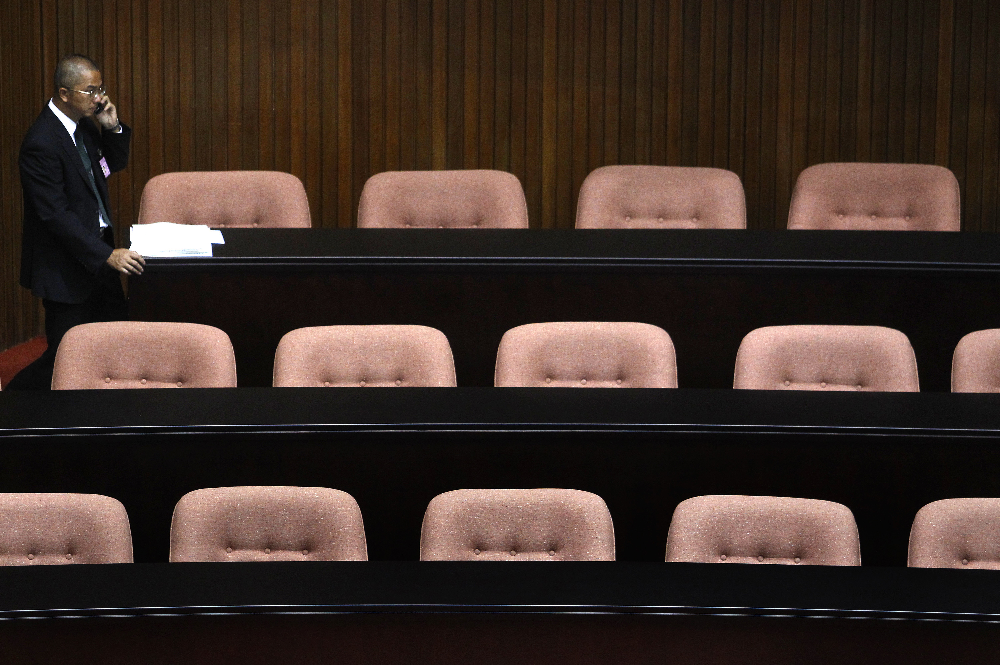

photo credit：林濁水
而第二堂課開始，我們要回到立法委員的戰場：立法院，從立法院的歷史開始講起，之後看看立法院的現況以及立法院所面對的困境，到底發生了什麼事情，會讓立法院總是得面對「效率不彰」、「黑箱作業」的罵名。
首先我們邀請了曾任民進黨立委，同時也對我國國會制度有深入研究，並曾經歷黨外運動的林濁水，來為大家來上一堂立法院的課。
說到立法院，林濁水苦笑著說：「立法院很難當成教材，因為負面太多。」
林濁水認為，立法院不能當成教材的理由是，立法院有很多荒謬的制度，而且是從戒嚴時代就遺留下來的，「全世界都沒有」，林濁水強調。怎麼說呢？林濁水解釋，「簡單的講，就是當時蔣家要把立法院當成『行政院立法局』，削弱立法院的能量，所以立法院有很多制度跟一般國會不一樣的。」
剛好11月份立法院長王金平接受自由時報的專訪談國會改革，林濁水就由這個報導作為起頭。「王金平在接受專訪的時候有說到一句話，那句話一下子就閃過去了，這個就是表示他沒有改革的意思。局外人可能看不懂，因為大家認為這是理所當然，但是那一句話就是亂源。」
林濁水所謂的亂源，就是立法院內各委員會的「召集委員」。
林濁水引述王金平的專訪：「…法案進入委員會，分屬朝野不同的召委，像平行線一樣，各自執行黨的意志。…」林濁水表示，兩個召委的制度全世界都找不到，就算是台灣的地方議會都沒有。為什麼呢？因為「蔣家要『眾建諸侯而少其力』（語出西漢賈誼《治安策》，意思就是廣立諸侯而削弱其力量），切的零零碎碎，每個人都分一點贓，又不會都沒有。」
兩個召委的情況之下，最後就是「你搞你的，我搞我的」，林濁水說。這就是王金平在專訪裡，所謂兩條平行線的情形。
而在美國，國會的召委權力就非常大（稱為主席），委員會底下又有「subcommitee」（小組委員會，或稱次委員會），subcommitee的主席權力也非常大。「委員會下面的次委員會，那個權力就很大了。因為那個權力在一個人身上啊，所以是跟部長平起平坐的。」林濁水強調。
「美國是權力分立的制度，所以國會議長是跟總統平行的，沒有誰大誰小。但我們的體制是把國會議長當成自己的副主席或是中常委，這是絕對不可以的。這違背權力分立的原則，這樣就變成是總統的部下了，民主國家沒有這這種幹法的，怎可以把議長當你部下呢？」
那麼如果議長也是黨員怎辦？「那就讓議長中立，所謂議長中立的前提就是不兼黨職，不兼黨職就不是你的部下了。」林濁水認為，議長兼黨職變成總統的部下，這也是蔣介石所造成的因，而這是也是台灣國會第二個全世界所沒有的「特色」。「部下有中立的嗎？部下當然是聽老闆的，」林濁水說，所以這就「眾建諸侯少其力」的用意。
把立委的權力削弱之後，再來又讓每個立委在委員會裡輪調。「輪來輪去的結果你就不會『囂擺』，不會坐大。讓你不資深，讓你不專業，讓你無法累積實力，讓你無法成為國會領袖。」這是第三個台灣獨有的制度。
再來就是王金平在專訪裡所提到的調查權。「調查權是當然需要的，唯有如此你才能獲得充分的資訊，立出好的法律，也才能有效的監督，但這都沒有。」
「你看，這些制度我到學校要怎樣教？無從教起啊！」林濁水苦笑。
因此，林濁水認為，目前立法院最大的問題就是「複數召委、輪調、調查權以及議長中立問題」，最需要迫切解決。
除了威權時代所留下的制度問題，林濁水也點出「過渡性的權宜」問題，而這其中最典型的就是備受爭議的「朝野協商」。
林濁水首先解釋朝野協商的背景由來。「朝野協商大家都以為是柯建銘搞出來的東西，但王金平在專訪裡也講的很清楚，這其實是劉松藩院長時代的東西，只是由王金平加以發揚光大。」林濁水回憶，當時會有朝野協商，主要是當年國民黨因為複數選區（SNTV制，複數選區單記非讓渡投票制）的關係，內部分崩離析，所以名義上的多數黨實際上執行有困難，除了國民黨黨內有「造反」，「新黨當時也去佔主席台，民進黨當然更不在話下，甚至當時一些無黨籍的人士為了個別的利益也是去佔。」
「立法院本來就是發言的地方，但是冗長的發言卻變成一個杯葛的手段。」林濁水表示，為了解決冗長發言杯葛法案的問題，所以就發明了朝野協商。「一開始使用朝野協商機制的時候，法案的確通過的很快，有一定的解決問題。」然而黨團協商卻與議會「公開」的精神背道而馳。「原本應該要公開講話，現在卻關起門來講悄悄話的地方。原本是權宜性的措施，現在卻造成了怪胎。」林濁水說。
然而審法案的速度快了，品質卻也因此變差。「法案審查是一條條的討論，但協商就針對一兩條在哪邊搞來搞去，所以法案前後整個精神的連貫就可能出問題。」林濁水強調。也因為許多法案送黨團協商，所以大部分的法案都擠在會期快結束時才處理，於是就產生了立法院挑燈夜戰「一邊打瞌睡一邊舉手」的奇特現象。也因為疲勞審案，所以錯誤百出。「像2013年的會計法就是一個典型。」林濁水說。
2013年，原本會計法修法要解決教授的研究費問題，但是立委一面打瞌睡一面寫的結果，竟然把「教」這個字給漏掉了。「這種好笑的還有啦，像是有個法條是『汽機車後座要戴安全帽』。本來機車後座要戴安全帽，這是ok的。打瞌睡的結果就變成「汽機車」了。我的天啊，這是什麼法令啊？」林濁水激動地說。
然而如果協商制度不利於法案的立法品質，為什麼還會一直存在？
林濁水認為，這就是「國會減半」的後遺症，因為立委變少反而讓協商制度更重要。林濁水解釋，因為國會減半變成113個委員，設立8個委員會，所以一個委員會裡約十來個委員。「最荒唐的就是司法法制委員會，他們對應法務部、司法院、監察院、考試院、人事總署，還有總統府的一部分。法案跟預算全都擠到這裡來，你怎麼有能力審，只好送協商啊。」林濁水說。
「所以如果委員人數這個問題不解決，這個協商制度很難改善，」林濁水直接點出問題核心，「所以你看王金平有沒有提到國會席次的事情？你席次不增加，怎樣去強化委員會呢？這就是國會減半的後遺症。」
而立法院的另一個問題，林濁水認為是「憲政體制不明確」。所以林濁水認為朝野都在講議長要中立化，「其實是錯的」。
因為憲政體制的不同，所以國會議長的角色也會有所不同，「像美國議長就不中立，英國最中立。」林濁水說。
「內閣制會強調議長中立，所以像是日本，一旦你當上議長，你就要退出所有的政黨活動，這才叫中立。英國也是一樣，議長絕對退出所有政黨活動。」而為了避免退出政黨活動導致競選議長連任失利，於是就形成一個慣例，當議長尋求連任時，反對黨就不派人競選。這樣的意義在於議長的中立性由在野黨保證，議長中立獲得肯定。「但我們現在對於議長的保障是來自於不分區，我這個黨提名你，你就中立一下下，這開什麼玩笑。」林濁水說。
「所以，你體制不清楚，你議長要中立，你要怎樣安頓？」林濁水質疑。
林濁水以美國為例，國會議長是政黨領袖，所以當國會議長與總統不同黨的時候，常常就會帶頭修理總統，而這樣的情況經常發生。
「所以你如果是說中立，那難道就是確定內閣制了嗎？所以憲政體制不明確，連議長中立你都不知道要怎樣弄。」林濁水說。
林濁水進一步指出，我國的憲政體制不明確還有一點，由於我國的政黨體制大多是「外造政黨」也就是原本在國會體制外的團體之後變成政黨，和英、美在在國會內由國會議員形成的「內造政黨」不同，因此，只要是黨內「中常委或大老」所領導派系下的國會議員，基本上就是由這個中常委或大老所指揮，國會自主性蕩然無存。
「所以，我們的國會，從頭，到胸，到肚子到腳，都長得奇形怪狀，全世界都找不到，你說要怎樣在學校講？」林濁水無奈地說。
那麼，要怎樣改進立法院這諸多怪象？林濁水認為，應該應該要趁著修憲的機會，或是這次國會政黨輪替後，「好好整頓一下」。
林濁水建議，國會改革應該從單一召委制度確定開始，再來是每一年輪的制度改掉，要採取資深制度。再來，就是如果真的需要進行協商就在委員會內，不要送到院會協商。再接下來就是憲政體制要確定，總統制還是內閣制兩種的差異很大，也決定了議長的中立性。
再來就是委員的席次要增加一倍以上，「我是覺得甚至要更多，250席也ok。」林濁水說。
林濁水解釋，「因為國會的席次有一些規則，有人說比較理想的就是人口的開立方根。如果這樣的話，台灣差不多是280席，這是第一個。第二個，國家除非超過一億以上人口的國家，否則盡量10萬人口以下產生一個立法委員。像英國十萬人一名、德國大概十來萬一個、法國也大概十萬一個、意大利和西班牙也差不多是十萬一個。」
林濁水認為，國會議員是社會跟國家的媒介，這個媒介要發揮性能就不能代理太多人，大概是以十萬人為合理的基準。所以有些國家三、五萬人就產生一個國會議員，理由就是人口比較少。但國會議員不能因為人口少就少，一般來講最起碼要150人，而這是一千萬人以內人口的標準。然而台灣兩千萬三百萬人口，「結果我們才100多個立委，所以這是荒謬的。」
這個林濁水眼中「荒謬」的立委席次減半怎來的？林濁水直指「昏頭的民粹」。「因為這個國會很爛，就想要把它砍一砍。」然而當時在進行立委減半的規劃時並沒有考慮到後遺症。於是，像是新竹縣差不多50萬人口但只有一席，然後選區又得要遷就行政區域，造成嚴重的「票不等值」現象，因此馬祖一萬人就有一席立委，在馬祖找國會議員跟在新竹找一個里長一樣方便，「這不公平吧？」林濁水質疑。
「這個完全違背憲法的平等全原則。」
林濁水嚴厲地指出，這是不懂的外行人瞎起鬨，搞民粹把整個國家的制度完全破壞。「最早的時候法政學界從來沒想過立委減半的議題，當時主要是推單一選區制，立委減半是陳水扁總統競選的訴求，老百姓聽了很爽，林義雄聽了說：『對對對，很好』，兩個人就一路推。」所以即使當時法政學者一面倒反對，但最後還是推成了。
所以，林濁水認為立委席次的問題一定要改，否則「將來很快又要出問題」。林濁水舉例，新竹縣市、苗栗、南投大概都是50萬人口的地方，而這裡頭苗栗有兩席、南投有兩席、新竹縣市各一席，「人口稍微漲一下，那就吵死人啦，就必須要調。」
就立委選制方面來看，林濁水認為，如果是只推單一選區而沒有立委席次減半的話就會是很好的發展。他認為席次減半其實只有負面的影響，對國會的發展一點幫助也沒有。但單一選區的推行有三個效果很明顯：第一，所謂的「三寶」不見了。以往要找到10%的人支持進而當選不算是太大的問題，但單一選區實施後得要51%的票才能當選，難度相當高。
第二是買票的難度變高，因此地方派系式微。第三個效應是追究責任的能力非常強。「2014的選舉就是這樣，你馬英九做的不好，我贏你6%就好，全部讓你倒光。」林濁水舉例。
雖然林濁水認為單一選區仍存在著一些副作用，但畢竟瑕不掩瑜。當時為了彌補單一選區的副作用，所以採取了「兩票制」。這樣一來，即使是小黨也不會因為無法過半數就被刷掉，仍可以靠不分區席次進國會。然而，立委減半同時也讓保障少數的能量減少了。
怎麼說呢？林濁水解釋，單一選區的情況下，如果選區不是太大，小黨說不定可以拿下幾席。但因為現在一個選區動輒三、四十萬，甚至五十萬人選一個立委，難度跟選縣長一樣困難的話，「小黨就全部再見了」。林濁水認為，如果縮到十萬左右，小黨說不定有幾個地方還有機會拿下席次。
林濁水不客氣地說，立委席次減半不但破壞整個國家制度，也等於民進黨的自殺，也是公民團體的自殺。
立委席次減半已經推行兩屆共八年的時間，諸如林濁水所提出的問題也漸漸浮現，未來有沒有機會改進？如同林濁水所強調的，問題一定要改，同時林濁水也認為，「已經漸漸讓人覺悟這個不對了」。林濁水舉「新台灣國策智庫」於今年9月所發佈的民調第44頁為例，問卷的題目是「馬祖人口只有1萬人，金門縣人口有10萬人，都可以各選1席立委，新竹縣人口有53萬人，也只有1席立委，形成票票不等值的情形，請問您同不同意這樣的說法？」調查出來有54.9%的受訪者認為不合理，「可見民眾開始覺得有問題了」，林濁水說。
時代在進步，政治也必須進步。成立至今已經將近90年的立法院，勢必也得改革，才能更符合我國的國情以及憲政體制。更重要的是，立法院負有審議法案與預算，推動國家進步的重責大任，而我們的一張張選票，就是未來台灣進步的動力。如同林濁水所言，人民已經漸漸看到國會席次減半所帶來的不良效應，而不再是由政黨意識所左右。2016立法院會走向何方，就決定在我們的手中。
林濁水說立法院有很多荒謬的制度，但到底怎麼來的？又該怎樣解決？
採訪：關鍵評論網 吳承紘
相信大家已經讀完第一堂有關立法委員到底在衝啥毀的課程，也大致了解我們的立法委員都在做些什麼，同時我們也在第一堂課請到許多專家、青年代表以及現任立委、黨編現身說法，來談立法院的運作，以及我們應該要怎樣來選擇一個好立委來為我們服務─進一步講，是選出好立委為國家服務，專心立法，讓我們的國家能夠不斷進步。
而第二堂課開始，我們要回到立法委員的戰場：立法院，從立法院的歷史開始講起，之後看看立法院的現況以及立法院所面對的困境，到底發生了什麼事情，會讓立法院總是得面對「效率不彰」、「黑箱作業」的罵名。
首先我們邀請了曾任民進黨立委，同時也對我國國會制度有深入研究，並曾經歷黨外運動的林濁水，來為大家來上一堂立法院的課。
立法院很難當成教材，因為負面太多
說到立法院，林濁水苦笑著說：「立法院很難當成教材，因為負面太多。」
林濁水認為，立法院不能當成教材的理由是，立法院有很多荒謬的制度，而且是從戒嚴時代就遺留下來的，「全世界都沒有」，林濁水強調。怎麼說呢？林濁水解釋，「簡單的講，就是當時蔣家要把立法院當成『行政院立法局』，削弱立法院的能量，所以立法院有很多制度跟一般國會不一樣的。」
剛好11月份立法院長王金平接受自由時報的專訪談國會改革，林濁水就由這個報導作為起頭。「王金平在接受專訪的時候有說到一句話，那句話一下子就閃過去了，這個就是表示他沒有改革的意思。局外人可能看不懂，因為大家認為這是理所當然，但是那一句話就是亂源。」
亂源之一：召集委員
林濁水所謂的亂源，就是立法院內各委員會的「召集委員」。
林濁水引述王金平的專訪：「…法案進入委員會，分屬朝野不同的召委，像平行線一樣，各自執行黨的意志。…」林濁水表示，兩個召委的制度全世界都找不到，就算是台灣的地方議會都沒有。為什麼呢？因為「蔣家要『眾建諸侯而少其力』（語出西漢賈誼《治安策》，意思就是廣立諸侯而削弱其力量），切的零零碎碎，每個人都分一點贓，又不會都沒有。」
兩個召委的情況之下，最後就是「你搞你的，我搞我的」，林濁水說。這就是王金平在專訪裡，所謂兩條平行線的情形。
而在美國，國會的召委權力就非常大（稱為主席），委員會底下又有「subcommitee」（小組委員會，或稱次委員會），subcommitee的主席權力也非常大。「委員會下面的次委員會，那個權力就很大了。因為那個權力在一個人身上啊，所以是跟部長平起平坐的。」林濁水強調。
亂源之二：把議長當部下
「美國是權力分立的制度，所以國會議長是跟總統平行的，沒有誰大誰小。但我們的體制是把國會議長當成自己的副主席或是中常委，這是絕對不可以的。這違背權力分立的原則，這樣就變成是總統的部下了，民主國家沒有這這種幹法的，怎可以把議長當你部下呢？」
那麼如果議長也是黨員怎辦？「那就讓議長中立，所謂議長中立的前提就是不兼黨職，不兼黨職就不是你的部下了。」林濁水認為，議長兼黨職變成總統的部下，這也是蔣介石所造成的因，而這是也是台灣國會第二個全世界所沒有的「特色」。「部下有中立的嗎？部下當然是聽老闆的，」林濁水說，所以這就「眾建諸侯少其力」的用意。
亂源之三：輪來輪去的委員會
把立委的權力削弱之後，再來又讓每個立委在委員會裡輪調。「輪來輪去的結果你就不會『囂擺』，不會坐大。讓你不資深，讓你不專業，讓你無法累積實力，讓你無法成為國會領袖。」這是第三個台灣獨有的制度。
再來就是王金平在專訪裡所提到的調查權。「調查權是當然需要的，唯有如此你才能獲得充分的資訊，立出好的法律，也才能有效的監督，但這都沒有。」
「你看，這些制度我到學校要怎樣教？無從教起啊！」林濁水苦笑。
因此，林濁水認為，目前立法院最大的問題就是「複數召委、輪調、調查權以及議長中立問題」，最需要迫切解決。
亂源之四：朝野協商
除了威權時代所留下的制度問題，林濁水也點出「過渡性的權宜」問題，而這其中最典型的就是備受爭議的「朝野協商」。
林濁水首先解釋朝野協商的背景由來。「朝野協商大家都以為是柯建銘搞出來的東西，但王金平在專訪裡也講的很清楚，這其實是劉松藩院長時代的東西，只是由王金平加以發揚光大。」林濁水回憶，當時會有朝野協商，主要是當年國民黨因為複數選區（SNTV制，複數選區單記非讓渡投票制）的關係，內部分崩離析，所以名義上的多數黨實際上執行有困難，除了國民黨黨內有「造反」，「新黨當時也去佔主席台，民進黨當然更不在話下，甚至當時一些無黨籍的人士為了個別的利益也是去佔。」
「立法院本來就是發言的地方，但是冗長的發言卻變成一個杯葛的手段。」林濁水表示，為了解決冗長發言杯葛法案的問題，所以就發明了朝野協商。「一開始使用朝野協商機制的時候，法案的確通過的很快，有一定的解決問題。」然而黨團協商卻與議會「公開」的精神背道而馳。「原本應該要公開講話，現在卻關起門來講悄悄話的地方。原本是權宜性的措施，現在卻造成了怪胎。」林濁水說。
法案通通送協商，立委挑燈審法案
然而審法案的速度快了，品質卻也因此變差。「法案審查是一條條的討論，但協商就針對一兩條在哪邊搞來搞去，所以法案前後整個精神的連貫就可能出問題。」林濁水強調。也因為許多法案送黨團協商，所以大部分的法案都擠在會期快結束時才處理，於是就產生了立法院挑燈夜戰「一邊打瞌睡一邊舉手」的奇特現象。也因為疲勞審案，所以錯誤百出。「像2013年的會計法就是一個典型。」林濁水說。
2013年，原本會計法修法要解決教授的研究費問題，但是立委一面打瞌睡一面寫的結果，竟然把「教」這個字給漏掉了。「這種好笑的還有啦，像是有個法條是『汽機車後座要戴安全帽』。本來機車後座要戴安全帽，這是ok的。打瞌睡的結果就變成「汽機車」了。我的天啊，這是什麼法令啊？」林濁水激動地說。
然而如果協商制度不利於法案的立法品質，為什麼還會一直存在？

photo credit：路透社
國會減半的惡果，讓朝野協商更加強化
林濁水認為，這就是「國會減半」的後遺症，因為立委變少反而讓協商制度更重要。林濁水解釋，因為國會減半變成113個委員，設立8個委員會，所以一個委員會裡約十來個委員。「最荒唐的就是司法法制委員會，他們對應法務部、司法院、監察院、考試院、人事總署，還有總統府的一部分。法案跟預算全都擠到這裡來，你怎麼有能力審，只好送協商啊。」林濁水說。
「所以如果委員人數這個問題不解決，這個協商制度很難改善，」林濁水直接點出問題核心，「所以你看王金平有沒有提到國會席次的事情？你席次不增加，怎樣去強化委員會呢？這就是國會減半的後遺症。」
亂源之五：憲政體制不明確
而立法院的另一個問題，林濁水認為是「憲政體制不明確」。所以林濁水認為朝野都在講議長要中立化，「其實是錯的」。
因為憲政體制的不同，所以國會議長的角色也會有所不同，「像美國議長就不中立，英國最中立。」林濁水說。
「內閣制會強調議長中立，所以像是日本，一旦你當上議長，你就要退出所有的政黨活動，這才叫中立。英國也是一樣，議長絕對退出所有政黨活動。」而為了避免退出政黨活動導致競選議長連任失利，於是就形成一個慣例，當議長尋求連任時，反對黨就不派人競選。這樣的意義在於議長的中立性由在野黨保證，議長中立獲得肯定。「但我們現在對於議長的保障是來自於不分區，我這個黨提名你，你就中立一下下，這開什麼玩笑。」林濁水說。
「所以，你體制不清楚，你議長要中立，你要怎樣安頓？」林濁水質疑。
林濁水以美國為例，國會議長是政黨領袖，所以當國會議長與總統不同黨的時候，常常就會帶頭修理總統，而這樣的情況經常發生。
「所以你如果是說中立，那難道就是確定內閣制了嗎？所以憲政體制不明確，連議長中立你都不知道要怎樣弄。」林濁水說。
林濁水進一步指出，我國的憲政體制不明確還有一點，由於我國的政黨體制大多是「外造政黨」也就是原本在國會體制外的團體之後變成政黨，和英、美在在國會內由國會議員形成的「內造政黨」不同，因此，只要是黨內「中常委或大老」所領導派系下的國會議員，基本上就是由這個中常委或大老所指揮，國會自主性蕩然無存。
「所以，我們的國會，從頭，到胸，到肚子到腳，都長得奇形怪狀，全世界都找不到，你說要怎樣在學校講？」林濁水無奈地說。
改革從何下刀？
那麼，要怎樣改進立法院這諸多怪象？林濁水認為，應該應該要趁著修憲的機會，或是這次國會政黨輪替後，「好好整頓一下」。
林濁水建議，國會改革應該從單一召委制度確定開始，再來是每一年輪的制度改掉，要採取資深制度。再來，就是如果真的需要進行協商就在委員會內，不要送到院會協商。再接下來就是憲政體制要確定，總統制還是內閣制兩種的差異很大，也決定了議長的中立性。
再來就是委員的席次要增加一倍以上，「我是覺得甚至要更多，250席也ok。」林濁水說。
林濁水解釋，「因為國會的席次有一些規則，有人說比較理想的就是人口的開立方根。如果這樣的話，台灣差不多是280席，這是第一個。第二個，國家除非超過一億以上人口的國家，否則盡量10萬人口以下產生一個立法委員。像英國十萬人一名、德國大概十來萬一個、法國也大概十萬一個、意大利和西班牙也差不多是十萬一個。」
林濁水認為，國會議員是社會跟國家的媒介，這個媒介要發揮性能就不能代理太多人，大概是以十萬人為合理的基準。所以有些國家三、五萬人就產生一個國會議員，理由就是人口比較少。但國會議員不能因為人口少就少，一般來講最起碼要150人，而這是一千萬人以內人口的標準。然而台灣兩千萬三百萬人口，「結果我們才100多個立委，所以這是荒謬的。」
昏頭民粹砍半國會席次
這個林濁水眼中「荒謬」的立委席次減半怎來的？林濁水直指「昏頭的民粹」。「因為這個國會很爛，就想要把它砍一砍。」然而當時在進行立委減半的規劃時並沒有考慮到後遺症。於是，像是新竹縣差不多50萬人口但只有一席，然後選區又得要遷就行政區域，造成嚴重的「票不等值」現象，因此馬祖一萬人就有一席立委，在馬祖找國會議員跟在新竹找一個里長一樣方便，「這不公平吧？」林濁水質疑。
「這個完全違背憲法的平等全原則。」
林濁水嚴厲地指出，這是不懂的外行人瞎起鬨，搞民粹把整個國家的制度完全破壞。「最早的時候法政學界從來沒想過立委減半的議題，當時主要是推單一選區制，立委減半是陳水扁總統競選的訴求，老百姓聽了很爽，林義雄聽了說：『對對對，很好』，兩個人就一路推。」所以即使當時法政學者一面倒反對，但最後還是推成了。
所以，林濁水認為立委席次的問題一定要改，否則「將來很快又要出問題」。林濁水舉例，新竹縣市、苗栗、南投大概都是50萬人口的地方，而這裡頭苗栗有兩席、南投有兩席、新竹縣市各一席，「人口稍微漲一下，那就吵死人啦，就必須要調。」
不幸中的大幸：單一選區制
就立委選制方面來看，林濁水認為，如果是只推單一選區而沒有立委席次減半的話就會是很好的發展。他認為席次減半其實只有負面的影響，對國會的發展一點幫助也沒有。但單一選區的推行有三個效果很明顯：第一，所謂的「三寶」不見了。以往要找到10%的人支持進而當選不算是太大的問題，但單一選區實施後得要51%的票才能當選，難度相當高。
第二是買票的難度變高，因此地方派系式微。第三個效應是追究責任的能力非常強。「2014的選舉就是這樣，你馬英九做的不好，我贏你6%就好，全部讓你倒光。」林濁水舉例。
雖然林濁水認為單一選區仍存在著一些副作用，但畢竟瑕不掩瑜。當時為了彌補單一選區的副作用，所以採取了「兩票制」。這樣一來，即使是小黨也不會因為無法過半數就被刷掉，仍可以靠不分區席次進國會。然而，立委減半同時也讓保障少數的能量減少了。
怎麼說呢？林濁水解釋，單一選區的情況下，如果選區不是太大，小黨說不定可以拿下幾席。但因為現在一個選區動輒三、四十萬，甚至五十萬人選一個立委，難度跟選縣長一樣困難的話，「小黨就全部再見了」。林濁水認為，如果縮到十萬左右，小黨說不定有幾個地方還有機會拿下席次。
林濁水不客氣地說，立委席次減半不但破壞整個國家制度，也等於民進黨的自殺，也是公民團體的自殺。
人民的覺醒是立法院前進的動力
立委席次減半已經推行兩屆共八年的時間，諸如林濁水所提出的問題也漸漸浮現，未來有沒有機會改進？如同林濁水所強調的，問題一定要改，同時林濁水也認為，「已經漸漸讓人覺悟這個不對了」。林濁水舉「新台灣國策智庫」於今年9月所發佈的民調第44頁為例，問卷的題目是「馬祖人口只有1萬人，金門縣人口有10萬人，都可以各選1席立委，新竹縣人口有53萬人，也只有1席立委，形成票票不等值的情形，請問您同不同意這樣的說法？」調查出來有54.9%的受訪者認為不合理，「可見民眾開始覺得有問題了」，林濁水說。
時代在進步，政治也必須進步。成立至今已經將近90年的立法院，勢必也得改革，才能更符合我國的國情以及憲政體制。更重要的是，立法院負有審議法案與預算，推動國家進步的重責大任，而我們的一張張選票，就是未來台灣進步的動力。如同林濁水所言，人民已經漸漸看到國會席次減半所帶來的不良效應，而不再是由政黨意識所左右。2016立法院會走向何方，就決定在我們的手中。
核稿編輯：楊士範
SHARE：